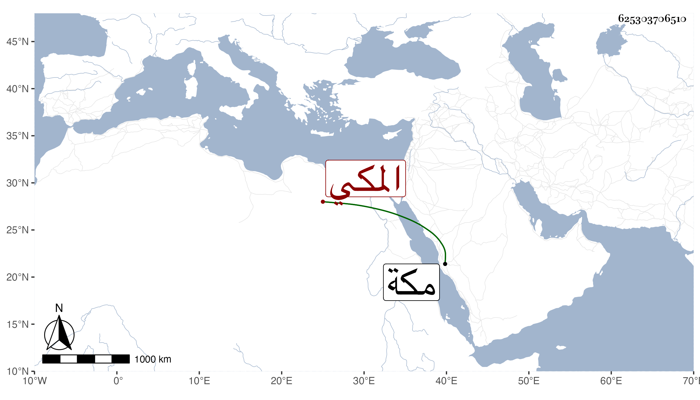

0902Sakhawi.DawLamic.ITO20230111-ara1.EIS1600.625303706510
Biography ID: 625303706510
363
أبو الطاهر بن إسماعيل بن علي بن محمد بن داود بن شمس المكي ويعرف كسلفه بالزمزمي ولد بمكة في رمضان سنة إحدى وثمانمائة ونشأ فأحضر في الرابعة مع أبيه على ابن صديق ختم البخاري ومات بمكة في شوال سنة اثنتين أو ثلاث وأربعين أرخه ابن فهد .
